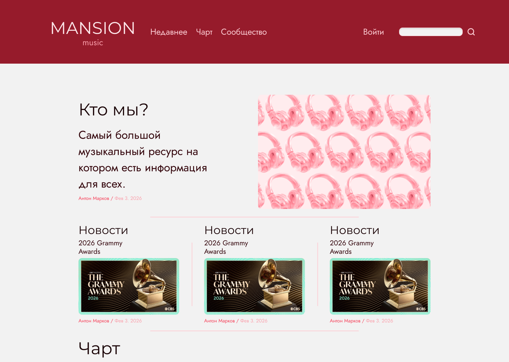
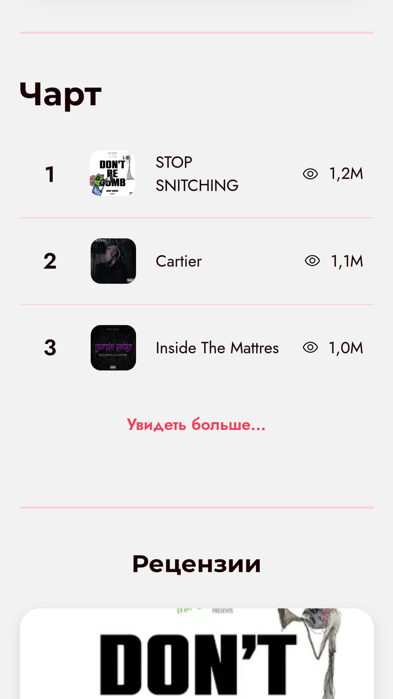
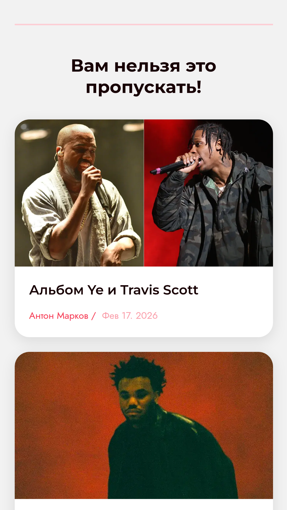
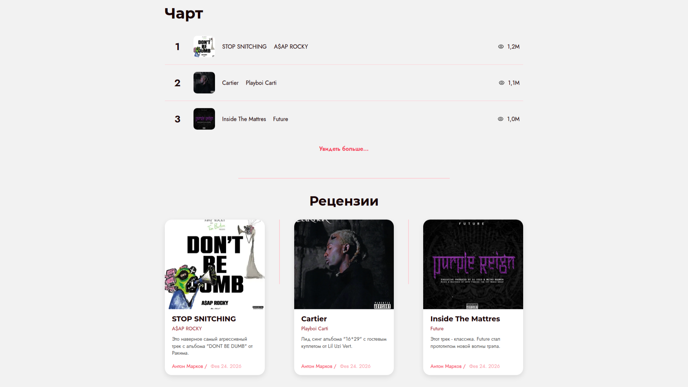
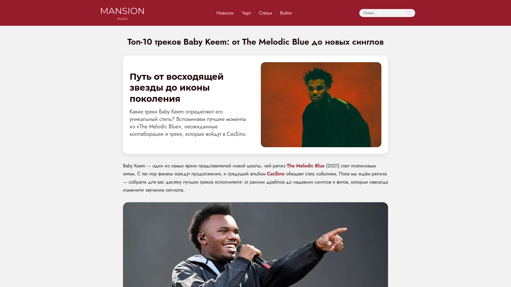
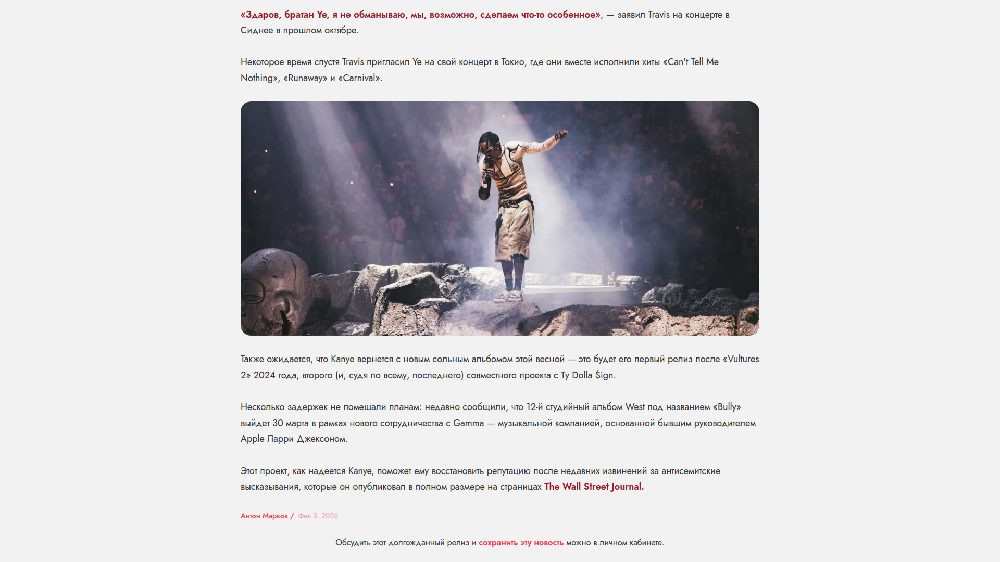

Mansion Music — платформа для тех, кто хочет расширить музыкальный кругозор. полностью бесплатная, без порога по доходу. целевая аудитория — русскоязычные пользователи от 16 лет, без верхней границы возраста.
визуальная система построена на контрасте: тёмно-красный акцент как энергия и тепло, чистый фон как пространство для контента. ориентир — genius.com, но для русскоязычного читателя.
бордовый — акцент · чёрный — текст · бежевый — фон · серый — разделители

в процессе разработки был проведён аудит. выявлены критические ошибки: нерабочие ссылки, слабый адаптив, отсутствие технических страниц. аудит стал точкой перезапуска — не исправления, а пересборки с нуля.
после пересборки платформа корректно поддерживает мобильные устройства. контентом можно наслаждаться где угодно — квизы, статьи, чарты.
мобильный квиз «Какой ты хип-хоп слушатель?» — пример интерактивного формата, который работает в рамках платформы.


уровень уникальности текстов — 90%, показатель воды — менее 10%. все страницы индексируются в Яндексе. контент написан для людей, а не для алгоритмов.



на текущем этапе пользователи не могут самостоятельно публиковать статьи. это ключевое ограничение, которое находится в разработке.
цель — открыть платформу для community-контента и построить полноценную экосистему для русскоязычных любителей музыки.
бесплатно. для всех. без ограничений.